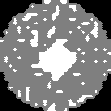
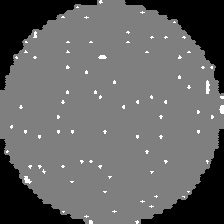
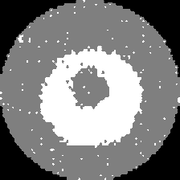
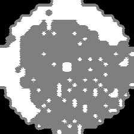
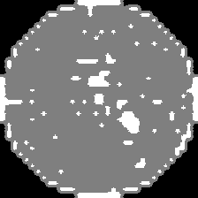
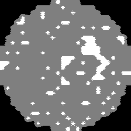
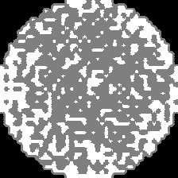
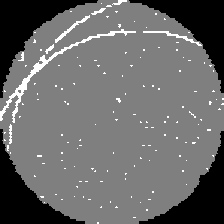

300mm Silicon Wafer Map Visualizer
784 DIE MATRIX
PASS Chips (Good):
621
FAIL Chips (Defect):
27
Die Yield:
95.8%
Drag & drop custom wafer map image, or browse file
Model Confidence
99.9%
Verified
Topological Defect Class
Softmax Probability

Center 98.01% Conf
Clean 100% Pass
Donut 99.99% Conf
Edge-Loc 99.29% Conf
Edge-Ring 79.41% Conf
Loc 99.39% Conf
Other 99.96% Conf
Scratch 99.92% ConfAutomated Fab Production Lot Simulator
Simulates continuous high-throughput wafer screening on semiconductor fabrication lines.
0 / 25
Wafers Screened
100%
Lot Yield
0
Defects Flagged